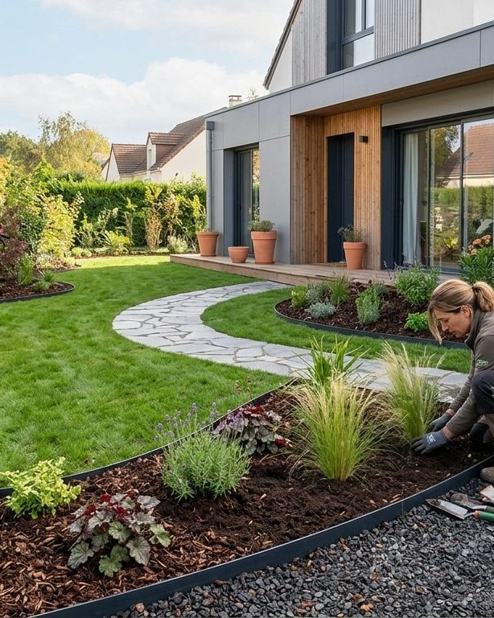

Création de jardins
- Massifs
- Engazonnement
- Allées
- Bordures
Paysagiste à Louveciennes (78)
Les 3 Jardins (L3J) aménage et entretient vos jardins à Louveciennes et aux alentours : massifs, plantations, pelouses.

Nos prestations
Création, plantations et entretien : les principaux domaines d'intervention.
À propos
Les 3 Jardins (L3J) est une entreprise d'aménagement paysager installée à Louveciennes, dans les Yvelines.
Pierre Gonin dirige l'entreprise. Contactez-le pour parler de votre jardin et demander un devis.
Contact
Appelez ou écrivez-nous pour décrire votre projet et demander un devis.
© Les 3 Jardins (L3J) · Maquette de démonstration